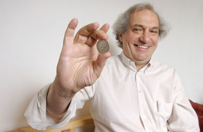

How many times do you need to shuffle a deck of cards before it is truly random?
how many times do you need to shuffle a deck of cards before it is truly random?
the answer, somewhat unexpectedly, is 7. more specifically, 7 riffle shuffles. that is the work of persi diaconis, one of the most original mathematicians of the last half century, and a man whose path to that result is almost as interesting as the result itself.
**the man**
diaconis dropped out of school at 14 to become a professional magician, apprenticing under the sleight-of-hand artist dai vernon. he spent his teenage years performing card tricks, learning to control decks with unusual precision, and thinking carefully about what shuffling actually does to a deck. at 24, with no high school diploma, he wrote to the statistician frederick mosteller at harvard and asked to be admitted. mosteller, apparently recognising something, arranged it. diaconis eventually completed a phd in mathematical statistics and became a professor, first at stanford and later at harvard. he is now at stanford again.

the background in magic is not incidental to his mathematics. diaconis had spent years thinking about shuffles from the inside, about what a skilled handler can control and what genuine randomness looks like to someone who knows what to look for. when he turned this into mathematics, the questions he asked were unusually precise.
**what does truly random mean?**
before asking how many shuffles are needed, you need to define what you are aiming for. a deck of 52 cards has $52! \approx 8 \times 10^{67}$ possible arrangements. a truly random deck is one where each of these arrangements is equally likely.
the natural measure of how far a shuffled deck is from truly random is the total variation distance. if $P$ is the probability distribution over arrangements after $k$ shuffles, and $U$ is the uniform distribution, the total variation distance is:
$$\|P - U\|_{TV} = \frac{1}{2} \sum_{\sigma \in S_{52}} |P(\sigma) - U(\sigma)|$$this is the maximum difference in probability that $P$ and $U$ assign to any event. if $\|P - U\|_{TV} = 1$, the distribution is as far from uniform as possible. if it is 0, the distribution is exactly uniform. in practice, you want it below some threshold, say 0.1, at which point the deck is close enough to random for practical purposes.
**the gilbert-shannon-reeds model**
to make the question mathematically precise, you need a model of how a riffle shuffle works. the standard one is the gilbert-shannon-reeds (GSR) model, developed independently by edgar gilbert and claude shannon in the 1950s and by jim reeds in the 1980s.
the model has two equivalent descriptions. the first is constructive: cut the deck into two packets according to a binomial distribution, so that a deck of $n$ cards is cut with $k$ cards in the left hand with probability $\binom{n}{k} / 2^n$. then repeatedly drop cards from either hand with probability proportional to the current packet size. a packet of $a$ cards on the left and $b$ cards on the right drops the next card from the left with probability $a/(a+b)$ and from the right with probability $b/(a+b)$.
the second description is inverse: choose one of $2^n$ equally likely binary sequences of length $n$. label the positions of 0s as the first packet and 1s as the second. the resulting interleaving is the shuffled deck. this inverse description makes the mathematics much cleaner.
after $k$ riffle shuffles under the GSR model, the probability of a particular permutation $\sigma$ depends only on the number of rising sequences in $\sigma$. a rising sequence is a maximal increasing subsequence in the arrangement. after $k$ shuffles of an $n$-card deck, the probability of a permutation with $r$ rising sequences is:
$$P_k(\sigma) = \frac{1}{(2^k)^n} \sum_{j=0}^{r} (-1)^j \binom{r}{j} \binom{2^k - j \cdot n + n - 1}{n}$$this formula, derived by diaconis and dave bayer in their 1992 paper, is the heart of the analysis.
**why 7: the cutoff phenomenon**
using this formula, bayer and diaconis computed $\|P_k - U\|_{TV}$ for a 52-card deck as a function of the number of shuffles $k$. the result was striking.
for $k \leq 5$, the total variation distance stays close to 1. the deck is far from random. at $k = 7$, it drops sharply to around 0.334. by $k = 10$ it is below 0.01. the transition from near-1 to near-0 happens abruptly, over a window of just a few shuffles, rather than declining gradually.
this sharp transition is called the cutoff phenomenon. it is not specific to card shuffling. many markov chains exhibit a similar behavior: the distribution stays far from uniform for a long time, then suddenly drops close to uniform over a short window. diaconis and his collaborators have identified cutoffs in a wide range of mixing processes, from random walks on groups to the ising model in statistical physics.
the reason for the cutoff in shuffling is combinatorial. after $k$ riffle shuffles, a deck of 52 cards has at most $2^k$ rising sequences. for the deck to look random, the number of rising sequences needs to be on the order of $n = 52$. this requires $2^k \approx 52$, which gives $k \approx \log_2 52 \approx 5.7$. the threshold is around 6, and the transition sharpens near 7. more precisely, the cutoff occurs at $\frac{3}{2} \log_2 n$ shuffles, giving $\frac{3}{2} \log_2 52 \approx 8.6$ for a 52-card deck, but the practical threshold where the deck is close enough to random is 7.
**the symmetric group and shuffle groups**
a shuffled deck is a permutation of 52 objects. all permutations of 52 objects form the symmetric group $S_{52}$, which has $52!$ elements. each shuffle is an element of this group, and composing shuffles corresponds to group multiplication.
diaconis asked: if you restrict to perfect riffle shuffles, where the deck is cut exactly in half and the two halves are perfectly interleaved, what subgroup of $S_{52}$ do you generate? a perfect shuffle takes a deck in order $1, 2, \ldots, 52$ and produces either the out-shuffle (card 1 stays on top) or the in-shuffle (card 1 moves to position 2). the set of all permutations reachable by sequences of perfect shuffles is called the shuffle group.
for a 52-card deck, the out-shuffle group has order 8, meaning only 8 distinct arrangements are reachable by sequences of perfect out-shuffles. this is a classical result: 8 perfect out-shuffles return a 52-card deck to its original order. a card magician who knows this can restore a deck to new-deck order through 8 apparently random shuffles.
the in-shuffle group is larger but still highly structured. diaconis, ron graham, and william kantor analysed shuffle groups for general deck sizes in the 1980s. for most deck sizes, the shuffle group is either the full symmetric group $S_n$, the alternating group $A_n$, or one of a small number of exceptional groups related to classical groups over finite fields. the structure depends delicately on the arithmetic of $n$.
what this means practically is that a magician using only perfect shuffles is not generating random permutations at all. the reachable set is a tiny, highly structured corner of $S_{52}$. genuine randomness requires the imperfect, probabilistic shuffles of the GSR model, and it requires at least 7 of them.
**the coin**
diaconis also showed that a fairly tossed coin lands on the same face it started on about 51% of the time. this is not a claim about a biased coin. it is a claim about the physics of tossing. a coin spun in the air precesses slightly due to the initial conditions, and this precession introduces a small but measurable bias toward the starting face. the effect was confirmed experimentally by diaconis and colleagues using a coin-tossing machine.
the coin result and the shuffling result share a common thread. both are cases where something that appears random, a tossed coin, a shuffled deck, turns out to be less random than assumed, and where making the statement precise requires building the right mathematical model. diaconis's career is largely the project of doing this across a wide range of seemingly random phenomena, and finding, repeatedly, that the randomness is more structured than it looks.